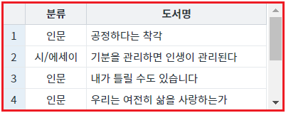
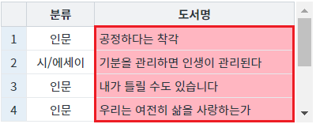
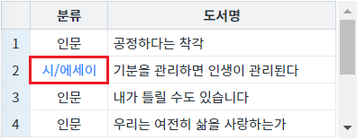
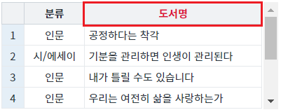

GridView의 바디 컬럼 또는 바디 셀 또는 헤더 셀의 스타일을 스크립트로 변경하는 예제입니다.
다음의 GridView 함수로 구현할 수 있습니다.
setColumnStyle: 바디 컬럼의 스타일을 적용합니다.
setCellStyle: 바디 셀의 스타일을 적용합니다.
setHeaderStyle : 헤더 셀의 스타일을 적용합니다.
보통 Style을 직접 제어하는 것 보다는 CSS파일에 Class를 정의하여 적용하는 방식으로 사용합니다.
(적용한 Style의 초기화가 용이하지 않습니다.)
다음은 Class를 적용하는 주요 함수 목록입니다.
- setColumnClass
- setCellClass
- setHeaderClass
스크립트로 바디 컬럼의 스타일 적용하기
스크립트로 바디 셀의 스타일 적용하기
스크립트로 헤더 셀의 스타일 적용하기
STEP 1. 초기 상태를 확인합니다.
스타일이 적용되지 않은 GridView가 구성되어 있습니다.
그림 1.브라우저(Chrome) 실행 예시

STEP 2. 스크립트로 바디 컬럼의 스타일을 적용합니다.
버튼 바디 컬럼 '도서명'의 배경색을 '#FFB6C1'으로 변경하기를 클릭합니다.STEP 3. 실행된 결과를 확인합니다.
GridView의 바디 컬럼 '도서명'의 배경색이 '#FFB6C1'(분홍색 계열)으로 변경됩니다.
그림 2.브라우저(Chrome) 실행 예시

STEP 1. 초기 상태를 확인합니다.
스타일이 적용되지 않은 GridView가 구성되어 있습니다.
그림 3.브라우저(Chrome) 실행 예시
STEP 2. 스크립트로 바디 셀의 스타일을 적용합니다.
버튼 바디 컬럼 '분류'의 두 번째 셀의 글자색을 '#1E90FF'로 변경하기를 클릭합니다.STEP 3. 실행된 결과를 확인합니다.
GridView의 바디 컬럼 '분류'의 두 번째 셀의 글자색이 '#1E90FF'(파란색 계열)으로 변경됩니다.
그림 4.브라우저(Chrome) 실행 예시

STEP 1. 초기 상태를 확인합니다.
스타일이 적용되지 않은 GridView가 구성되어 있습니다.
그림 5.브라우저(Chrome) 실행 예시
STEP 2. 스크립트로 헤더 셀의 스타일을 적용합니다.
버튼 헤더 컬럼 '도서명'의 글자색을 '#DC143C'으로 변경하기를 클릭합니다.STEP 3. 실행된 결과를 확인합니다.
GridView의 헤더 컬럼 '도서명'의 글자색이 '#DC143C'(붉은색 계열)으로 변경됩니다.
그림 6.브라우저(Chrome) 실행 예시

GridView의 함수 'setColumnStyle'를 이용하여 스크립트를 작성합니다. 세부 지정은 아래의 스크립트 예시에 작성되어 있습니다.
스크립트
//예제 파일에서는 스크립트 scwin.btn_exam1_1_onclick에 작성되어 있습니다. // GridView 'grd_exam'의 바디 컬럼 ID가 'label'인 컬럼의 배경색을 '#FFB6C1'으로 지정합니다. grd_exam.setColumnStyle("label", "background-color", "#FFB6C1");
GridView의 함수 'setCellStyle'를 이용하여 스크립트를 작성합니다. 세부 지정은 아래의 스크립트 예시에 작성되어 있습니다.
스크립트
//예제 파일에서는 스크립트 scwin.btn_exam1_2_onclick에 작성되어 있습니다. // GridView 'grd_exam'의 바디 컬럼 ID가 'categoryLabel'인 컬럼의 두 번째 셀의 글자색을 '#FFB6C1'으로 지정합니다. grd_exam.setCellStyle(1, "categoryLabel", "color", "#1E90FF");
GridView의 함수 'setHeaderStyle'를 이용하여 스크립트를 작성합니다. 세부 지정은 아래의 스크립트 예시에 작성되어 있습니다.
스크립트
//예제 파일에서는 스크립트 scwin.btn_exam1_3_onclick에 작성되어 있습니다. // GridView 'grd_exam'의 헤더 컬럼 ID가 'h_label'인 셀의 글자색을 '#DC143C'으로 지정합니다. grd_exam.setHeaderStyle("h_label", "color", "#DC143C");
setHeaderStyle( headerId , style , value )
setColumnStyle (colIndex, styleName, styleValue)
setCellStyle (rowIndex, colIndex, styleName, styleValue)
setColumnClass( colIndex , className )
setCellClass( rowIndex , colIndex , className )
setHeaderClass( headerId , className )
removeColumnClass( colIndex )
removeCellClass( rowIndex , colIndex )
removeHeaderClass( headerId , className )
[웹스퀘어5 SP5 개발 가이드] GridView
링크 : https://docs1.inswave.com/sp5_user_guide/86bdcf48029b958b